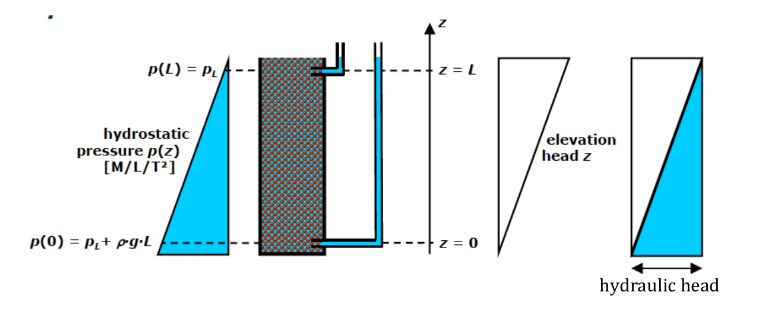
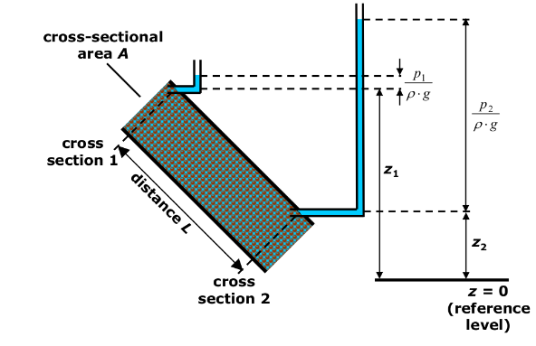
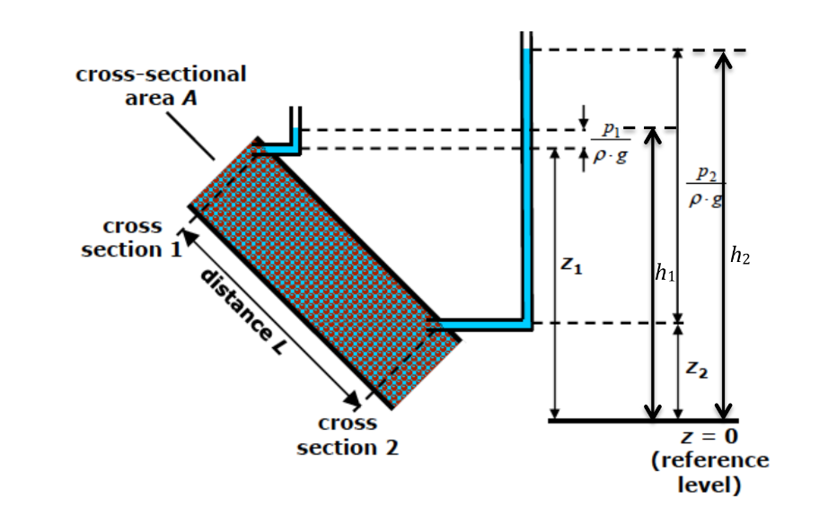
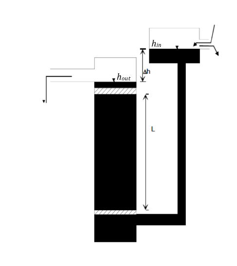
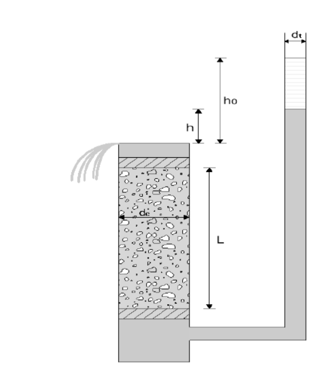
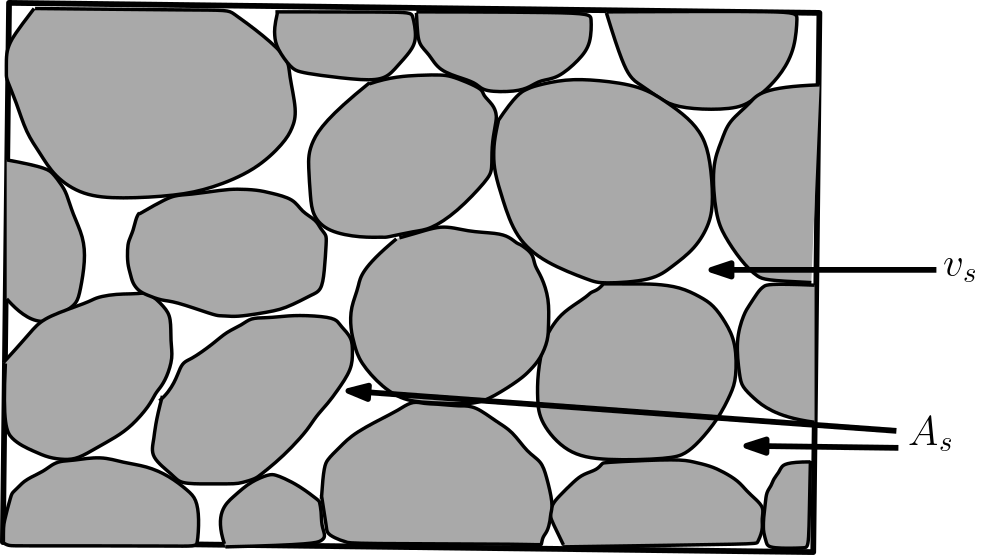

Darcy’s Law and Conductivity
Contents
3. Darcy’s Law and Conductivity#
(The contents presented in this section were re-developed principally by Prof. B. R. Chahar and Dr. P. K. Yadav. The original contents are from Prof. Rudolf Liedl)
3.1. Energy and hydraulic head#
In the last section we learned that hydrostatic pressure difference \(p(z)\) will not allow the fully quantify water flow. In fact in addition to \(p(z)\) other form of energy must also be considered.
The energy available for groundwater flow is given the name hydraulic head \((h)\) or also called piezometric head:. It consists of three components, related to
elevation, pressure and velocity.
The total energy head is expressed by the equation
where,
\(z\) is the elevation or datum head [L],
\(p\) is the pressure
exerted by water column [M L\(^{-1}\) T\(^{-2}\)],
\(\rho\) is the density of fluid [M L\(^{-3}\)],
\(g\) is the acceleration due to gravity [LT\(^{-2}\)], and
\(v\) is velocity of flow [LT\(^{-1}\)].
Note that the \(h\) has the dimension of length [L]. In groundwater flow, the velocity is so low that the energy contained in velocity can be neglected when computing the total energy. Thus, the hydraulic head (see figure below) is written as
The above equation says that Water flow is governed by differences in hydraulic head and not by differences in pressure head alone.
It is to be noted that \(z\) depends on the orientation. In the above equation \(+z\) is considered oriented upward (based on conventional sign convention). If \(z-\)axis is oriented downwards, we have
3.1.1. Hydraulic head and discharge - when there is no discharge#
Consider the figure below:
{kind=link}
The pressure head: \(p(z) = p_L + \rho \cdot g \cdot (L-z)\)
The hydraulic head (piezometric head): \(h(z) = \frac{p(z)}{\rho \cdot g } + z = \frac{p_L + \rho \cdot g \cdot (L-z) }{\rho \cdot g } + z = \frac{p_L}{\rho \cdot g}+ L = \text{Const}\)
In the figure above the hydraulic head difference between two points (\(z=0\) and \(z=L\)) are exactly equal, i.e., \(\Delta h = 0\). This refers to the system with no energy gradient and hence a no flow system.
3.1.2. Hydraulic head and discharge - when there will be a discharge#
Now consider the figure below
{kind=link}
Here there is clear difference between the elevation head (\(z_1\) and \(z_2\)), which is taken from a reference level (\(z=0\) in this case. Average Sea Level (ASL), is often use for this reference). Also differing are pressure heads (\(p_1\) and \(p_2\)). Therefore, the \(h(z)\) in this case are:
As can be observed from the figure, in this case \(h_1<h_2\). Thus, analogus to flow of energy - i.e., from higher energy level to the lower energy level, the flow in this example case is from cross-section 2 towards cross section 1.
It is to be noted that the magnitude of the hydraulic head (\(h\)) rather than the orientation of the set-up determines the direction of discharge.
Also, important to note is that the differences of hydraulic head \((\Delta h)\) is independent of of the position of the origin of the reference axis (\(z\)-axis in the above case).
3.1.3. Example problem#
Energy and hydraulic head
At a place where the fluid pressure is \(1500 \frac{N}{m^2}\), the distance above the reference elevation is \(0,8 m\) and the fluid density is \(1000 \frac{kg}{m^3}\). The fluid moves at a speed of \(1 \cdot 10^{-6} \frac{m}{s}\). Find the total energy head.
print("Let us find the total energy head.\n\nProvided are:")
z = 0.8 #elevation
g = 9.81 # [m/s^2]
p = 1500 # fluid pressure [N/m^2]
rho = 1000 # fluid density [kg/m^3]
v = 1e-6 #velocity [m/s]
#solution
h = z + p/(rho*g)+ v**2/(2*g) # m, head
print("elevation = {} m\nacceleration due to gravity = {} m\nfluid pressure = {} m\nfluid density = {} m, and\nvelocity = {} m/s".format(z,g,p,rho,v),"\n")
print("The resulting total energy head is {0:0.2f} m".format(h))
Let us find the total energy head.
Provided are:
elevation = 0.8 m
acceleration due to gravity = 9.81 m
fluid pressure = 1500 m
fluid density = 1000 m, and
velocity = 1e-06 m/s
The resulting total energy head is 0.95 m
3.2. Darcy’s Law#
Groundwater in its natural state is invariably moving. This movement is governed by established hydraulic principles. Darcy’s Law is a phenomenologically derived constitutive equation that describes the flow of a fluid through a porous medium. Darcy’s Law along with the equation of conservation of mass is equivalent to the groundwater flow equation, one of the basic relationships of hydrogeology. It is also used to describe oil, water, and gas flows through petroleum reservoirs.
The law was formulated by Henry Darcy (Darcy, 1856) based on the results of experiments on the flow of water through beds of sand (Figure below shows a schematic setup). In the experiments, area of cross section (\(A\) [L\(^2\)] \(= \text{Const}\)) was kept constant. Constant discharge (\(Q= \text{Const}\)) was applied and the sand medium was fully saturated, i.e., voids between sand grains were completely filled with water.
{kind=link}
Darcy’s law is a simple mathematical statement which neatly summarizes several familiar properties that groundwater flowing in aquifers exhibits, including:
If there is no hydraulic gradient (difference in hydraulic head over a distance), no flow occurs (this is hydrostatic conditions),
If there is a hydraulic gradient, flow will occur from a high head towards a low head (opposite the direction of increasing gradient, hence the negative sign in Darcy’s law),
The greater the hydraulic gradient (through the same aquifer material), the greater the discharge, and
The discharge may be different through different aquifer materials (or even through the same material, in a different direction) even if the same hydraulic gradient exists.
From the experiments Darcy observed that the volume of water per unit time passing through a porous medium
is directly proportional to the \(A\) [L\(^2\)] and the head difference between inlet and outlet \((h_1 – h_2)\) [L], and
is inversely proportional to the length of the medium \(L\) [L]
i.e.,
which in terms of specific discharge \(q\), or discharge velocity or Darcy velocity \(v\) [LT\(^{-1}\)] is
where constant of proportionality \(K =\) hydraulic conductivity [LT\(^{-1}\)]; and \(i = \partial h/ \partial L =\) hydraulic gradient = rate of head loss per unit length of medium [ ]. The negative sign indicates that the total head is decreasing in the direction of flow because of friction or resistance
3.2.1. Example problem#
Darcy’s Law
Calculate the specific discharge and the flow rate passing through the surface with the given parameters.
Provided are:
Conductivity = 0.0005 m/s
Surface = 10 m²
Hydraulic head at the inlet = 10 m
Hydraulic head at the outlet = 2 m
Lenght of the column = 5 m
K = 5e-4 # m/s, conductivity
A = 10 # m², surface
h_in = 10 # m, hydraulic head at the inlet
h_out = 2 # m, hydraulic head at the outlet
L = 5 #m, lenght of the column
#intermediate calculation
I = (h_in-h_out)/L
#solution
q = K*I
Q = K*I*A
print("Conductivity = {} m/s\nSurface = {} m²\nHydraulic head at the inlet = {} m\nHydraulic head at the outlet = {} m\nLenght of the column = {} m".format(K, A, h_in, h_out, L), "\n")
print("Solution:\nThe resulting specific discharge is {0:0.0e} m/s".format(q), "\nand the flow rate is {0:0.0e} m³/s".format(Q))
Conductivity = 0.0005 m/s
Surface = 10 m²
Hydraulic head at the inlet = 10 m
Hydraulic head at the outlet = 2 m
Lenght of the column = 5 m
Solution:
The resulting specific discharge is 8e-04 m/s
and the flow rate is 8e-03 m³/s
3.2.2. Darcy’s law and analogous physical systems#
Darcy’s law is analogous to pipe flow in which energy is dissipated over the distance to overcome frictional loss resulting from fluid viscosity.
It also forms the scientific basis of permeability used in the earth sciences.
It may be noted Darcy’s law is analogous to Fourier’s law in the field of heat conduction, Ohm’s law in the field of electrical networks, or Fick’s law in diffusion theory.
3.3. Hydraulic Conductivity and Intrinsic Permeability#
Hydraulic Conductivity (\(K\)) appeared in the Darcy’s law as a constant of proportionality, i.e., it is the fundamental quantity that is required to describe groundwater flow. Therefore we illustrate this further,
A medium has a unit hydraulic conductivity if it will transmit in unit time a unit volume of groundwater at the prevailing kinematic viscosity through a cross section of unit area measured at right angles to the direction of flow, under a unit hydraulic gradient.
The hydraulic conductivity of a soil or rock depends on a variety of physical factors, important ones are:
porosity,
particle size and distribution,
shape of particles,
arrangement of particles.
Also, hydraulic conductivity is depends on the property of the fluid e.g., density, viscosity
In general for unconsolidated porous media,\(K\) varies with square of particle size; clayey materials exhibit low values of \(K\), whereas sands and gravels display high values
Typical values for hydraulic conductivity (see figure XX for more comprehensive listing):
Media Type |
hydraulic conductivity (m/s) |
|---|---|
Gravel |
\(10^{-2} – 10^{-1}\) |
coarse sand |
\(\approx 10^{-3}\) |
medium sand |
\(10 ^{-4} – 10^{-3}\) |
fine sand |
\(10^{-5} – 10^{-4}\) |
Silt |
\(10^{-9} – 10^{-6} \) |
Clay |
\(< 10^{-9} \) |
3.3.1. Obtaining Hydraulic Conductivities#
The hydraulic conductivity depends on properties of the fluid (density, viscosity, temperature) and on properties of the porous medium (effective porosity, grain size distribution). It can be obtained by calculation from formulas, laboratory methods, or field tests
The laboratory method can be indirect method or direct method. For example, determination of the hydraulic conductivity based on the evaluation of sieve analysis data is the indirect laboratory method. On the other hand, the direct method of determination of the hydraulic conductivity (e.g. permeameter) is based on some version of Darcy‘s experiment. Advantages of laboratory methods include controlled conditions, small sample size (easy handling), lower costs, larger number of experiments, etc. While, the disadvantages of laboratory methods are disturbed samples, additional pathways at column walls, small sample size (randomly high or low K), flushing of fine material, etc.
3.3.1.1. Hydraulic Conductivities estimations from Sieve analysis#
Sieve analysis data can be evaluated to estimate hydraulic conductivity of unconsolidated media. There are several empirical methods. The simplest one dates back to Hazen (1892):
where, \(d_{10}\) = grain diameter (mm) corresponding to \(10 \%\) of cumulative mass fraction. It can be generalized by including temperature (\(\theta\) in \(^\circ\)C). Thus the Hazen formula becomes
Hazen’s formula is only valid for the indicated units, i.e., conversion of the unit may be required before using the formula.
3.3.2. Example problem#
Hydraulic Conductivity from sieve data
An Aquifer with fine to medium sand was investigated with an sieve analysis. At a temperature of \(20°C\) a \(d_{10}\) of \(0.13\) mm was measured. Determine the hydraulic conductivity (using Hazen’s formula) and how it changes when the temperature rises by \(5°C\).
print("Let us find the hydraulic conductivities.\n\nProvided are:")
d10 = 0.13 # mm, grain diameter corresponding to 10% of cumulative mass fraction
T1 = 10 # °C, Temperature
deltaT = 5 # °C, temperature change
#intermediate calculation
T2 = T1 + deltaT
#solution based on Hazen's formula
K1 = 0.0116 * d10**2 * (0.7 + 0.03*T1)
K2 = 0.0116 * d10**2 * (0.7 + 0.03*T2)
print("grain diameter corresponding to 10% of cumulative mass fraction = {} mm\nTemperature = {} °C\ntemperature change = {} K".format(d10, T1, deltaT),"\n")
print("The resulting hydraulic Conductivity at 20°C is {0:0.2e} m/s".format(K1),
"\nand the resulting hydraulic conductivity at 25°C is {0:0.2e} m/s".format(K2))
Let us find the hydraulic conductivities.
Provided are:
grain diameter corresponding to 10% of cumulative mass fraction = 0.13 mm
Temperature = 10 °C
temperature change = 5 K
The resulting hydraulic Conductivity at 20°C is 1.96e-04 m/s
and the resulting hydraulic conductivity at 25°C is 2.25e-04 m/s
3.3.2.1. Hydraulic Conductivities estimations from Darcy’s Law#
Permeameter is an instrument used to determine hydraulic conductivity of soil samples in the laboratory as direct method. The design of permeameters is based on Darcy‘s experiment.
{kind=link}
There are mainly two types of permeameters
Constant-head permeameter, and
Falling-head permeameter.
In constant-head permeameters as shown in Figure the hydraulic heads at inflow and outflow of the Darcy column are constant in time. As a consequence, the discharge is not changing with time.
{kind=link}
The hydraulic conductivity can be obtained by observing discharge and heads and then substituting in the below formula that is rearranged form of Darcy’s law from:
where \(Q\) =discharge[L\(^3\)T\(^{-1}\)];
\(L\) = length of sample [L];
\(A\) = cross-sectional area of sample [L\(^2\)];
\(h_{in}\) = hydraulic head at column inlet [L];
\(h_{out}\) = hydraulic head at column outlet [L];
\(\Delta h\) = \(h_{in} - h_{out}\)
\(h_{out}\) can be set equal to zero as only head differences are important.
3.3.3. Example problem#
Hydraulic Conductivity from Constant head-permeameter
A constant-head permeameter has a length of 15 cm and a cross-sectional area of \(25\) cm\(^2\). With a head of 5 cm, a total Volume of 100 mL of water is collected in 12 min. Determine the hydraulic conductivity.
print("Let us find the hydraulic conductivity with a constant-head permeameter.\n\nProvided are:")
L = 15 # Length of the permeameter [cm]
A = 25 # cross-sectional area [cm^2]
h = 5 # hydraulic head [cm]
V = 100 # Volume of collected water [mL = cm^3]
t = 12 # time [min]
#solution
K1 = (V * L)/(A * t * h)
K2 = K1/(60*100)
print("Length of the permeameter = {} cm \ncross-sectional area = {} cm\u00b2\nhydraulic head = {} cm \nVolume = {} mL \ntime = {} min".format(L,A,h,V,t),"\n")
print("The resulting hydraulic Conductivity is {0:2.0e} cm/min".format(K1),
"\nand which is {:02.0e} m/s".format(K2))
Let us find the hydraulic conductivity with a constant-head permeameter.
Provided are:
Length of the permeameter = 15 cm
cross-sectional area = 25 cm²
hydraulic head = 5 cm
Volume = 100 mL
time = 12 min
The resulting hydraulic Conductivity is 1e+00 cm/min
and which is 2e-04 m/s
In falling-head permeameter as shown in Figure the hydraulic head at the outflow of the Darcy column is not changing, but the hydraulic head at the inflow is decreasing with time.
{kind=link}
As a result, the discharge also decreases with time. Rewriting Darcy’s law for a small time interval
\(K\) can be obtained from the above equation by separating the variables and then integrating. The resulting expression for \(K\) will be
where,
\(L\) = length of sample [L];
\(d_c\) = diameter of sample cylinder [L];
\(d_t\) = diameter of piezometer tube [L];
\(h_{in}(0)\) = initial hydraulic head at column inlet [L];
\(h_{in}(t)\) = final hydraulic head at column inlet [L];
\(h_{out}\) = hydraulic head at column outlet [L];
\(h_0 = h_{in}(0) - h_{out}\);
\(h = h_{in}(t) - h_{out}\)
and \(h_{out}\) can be set equal to zero as only head differences are important. The hydraulic conductivity can be obtained from the above equation using observed time and corresponding heads. Larger experimental time periods are needed for the falling-head permeameter, in particular if hydraulic conductivity is low. On the other hand, no measurement of discharge or water volume is required.
Field methods of determination of the hydraulic conductivity include tracer tests, auger hole tests, pumping tests of wells, etc. Field experiments are much more complicated and expensive than laboratory tests. Resulting hydraulic conductivities represent averages over an aquifer volume, which is covered by the experiment. The size of this volume depends on subsurface properties and on the experimental method used.
3.3.4. Intrinsic Permeability#
A convenient alternative is to write Darcy’s equation in a form of intrinsic permeability where the properties of the medium and the fluid are represented explicitly
where, \(k\) is the intrinsic permeability [L\(^2\)], and \(\eta\) is the dynamic viscosity of fluid [ML\(^{-1}\)T\(^{-1}\)] e.g., (Pa-S). The relation between hydraulic conductivity intrinsic permeability, therefore, is
In terms of Kinematic viscosity [L\(^2\)T\(^{-1}\)}], \(\eta = \rho \cdot \nu\), the above relation becomes
Both density and viscosity are temperature dependent quantites. Their values in field conditions \(\approx 10 ^\circ\)C and in the laboratory conditions \(\approx 20 ^\circ\)C are:
10°C |
20°C |
|
|---|---|---|
density (kg/m\(^3\)) |
999.7 |
999.7 |
kinematic viscosity (m\(^2\)/s) |
1.3101·10\(^{-6}\) |
1.0105·100\(^{-6}\) |
dynamic viscosity (Pa\(\cdot\)s) |
1.3097·10\(^{-3}\) |
1.3097·100\(^{-3}\) |
The intrinsic permeability can be written in terms of specific weight or weight density [ML\(^{-2}\)T\(^{-2}\)] (or in metric unit- N/m\(^3\)), \(\gamma = \rho\cdot g\) as
3.3.5. Example problem#
Instrinsic Permeability
The intrinsic permeability of a consolidated rock is \(2,7 \cdot 10^{-11} cm^2\). What is the hydraulic conductivity for water at 20°C
print("Let us find the hydraulic conductivity.")
k = 2.7e-15 # intrinsic permeability [m^2]
rho = 999.7 # density at 20°C [kg/m^3]
eta = 0.013097 # dynamic viscosity at 20°C [Pa*s]
g = 9.81 # [m/s^2]
# solution
K = k * ((rho * g)/eta)
print("intrinsic permeability = {} m\u00b2\ndensity = {} kg/m\u00b3\ndynamic viscosity = {} Pa*s".format(k, rho, eta),"\n")
print("The resulting hydraulic conductivity at 20°C is {0:0.1e} m/s".format(K))
Let us find the hydraulic conductivity.
intrinsic permeability = 2.7e-15 m²
density = 999.7 kg/m³
dynamic viscosity = 0.013097 Pa*s
The resulting hydraulic conductivity at 20°C is 2.0e-09 m/s
3.3.6. Properties of Intrinsic Permeability#
The value of intrinsic permeability of a porous medium equals 1 m\(^2\) if a fluid with dynamic viscosity of 1 Pa\(\cdot\)s can pass through the porous medium at a Darcy velocity of 1 m/s under a hydrostatic pressure gradient of 1 Pa/m (horizontal flow).
The intrinsic permeability is independent of the fluid moving through the medium and depends only upon the medium properties. Intrinsic permeability of unconsolidated porous media is roughly proportional to the square of the pore diameter.
The intrinsic permeability is used primarily when the density or the viscosity of the fluid varies with position.
The dimension of \(k\) is [L\(^2\)], but when expressed in m\(^2\) is so small that square micrometers (\(\mu\) m)\(^2 = 10^{-12}\) m\(^2\) is used. In the petroleum industry it is expressed in Darcy (symbol: D) with conversion factor to SI units is: 1 D \(= 0.987\cdot 10^{-12}\) m\(^2\).
Intrinsic permeability for a weakly , well and highly permeable aquifers vary in the range 10\(^{-4}\) to 10\(^{-1}\) D, 10\(^{-1}\) to 10\(^2\) D, and \(> 10^2\) D respectively
Typical value of conductivity and intrinsic permeability is provided in the fig (from Todd and Mays, 2004) below.
{kind=link}
3.4. Darcy velocity and Interstitial velocity#
Darcy velocity \(v\) is the apparent velocity or fictitious velocity or Darcy flux (discharge per unit area). This value of velocity, often referred to as the apparent velocity, is not the velocity which the water traveling through the pores is experiencing. The velocity \(v\) is referred to as the Darcy velocity because it assumes that flow occurs through the entire cross section of the material without regard to solids and pores. Actually water can flow though pores only and the pore spaces vary continuously with location within the medium. Therefore the actual velocity is nonuniform, involving endless accelerations, deceleration, and changes in direction. To define the actual flow velocity or interstitial velocity, one must consider the microstructure of the rock material.
For naturally occurring geologic materials, the microstructure cannot be specified three- dimensionally; hence, actual velocities can only be quantified statistically.
{kind=link}
Actually, the flow is limited to the pores (white spaces in Figure) only so that the average interstitial velocity or actual velocity or seepage velocity \((v_s)\) through pore space can be determined by applying continuity equation
Leading to
where \(A\) = total area of soil specimen, and \(A_s\) = area of pores only (see Figure). The velocity is divided by effective porosity (\(\nu_e\)) to account for the fact that only a fraction of the total aquifer volume is available for flow. This indicates that for a sand with a porosity of 33% the \(v_s = 3 v\). Thus the average interstitial velocity or seepage velocity or linear velocity through pore space is never smaller than Darcy velocity. Sometimes, the average flow velocity of water in the pore space is termed linear velocity.
3.4.1. Example problem#
Interstitial velocity
From the data below obtain the average interstitial velocity in the Darcy’s column.
Provided data are:
Flow rate = 0.005 m³/s
total area = 1000 m²
effective porosity = 0.4
Q = 0.005 # Flow rate [m^3/s]
A = 1000 # total area of soil specimen [m^2]
ne = 0.4 # effective porosity [-] =
#solution
vs = Q / (ne * A)*3600*24
print("The resulting average interstitial velocity is {} m/d".format(vs))
The resulting average interstitial velocity is 1.08 m/d
3.4.2. Typical values of linear velocities#
Typical values for average interstitial velocities or linear velocities in unconsolidated aquifers are 0.5 m/d to 1 m/d and 30 m/d to 300 m/d in sand and gravel respectively.
Linear velocities in fractured or karstified aquifers can be rather high along fractures or conduits e.g. 200 m/d to 1.2 km/d along fractures and 3 km/d to 14 km/d in karst conduits.
On the contrary, the linear velocities are very low in the rock matrix of consolidated aquifers (1 cm/d or even less).
3.4.3. Travel time and Pore volume#
The average linear/pore velocity is the velocity a conservative tracer/dye experiences if carried by water through the aquifer.
The travel time of water through a column of length \(L\) is given by
It is to be noted that the linear/seepage velocity \(v_s\) has to be used in travel time computation, not the Darcy velocity. The term residence time is can also be found to be used for referring to travel time .
Yet another important term that is often found in standard texts is pore volume. The _pore volume is the travel time through a column. It can be understood as the time needed to replace the water in the column. In this sense, the pore volume is not a volume but a time (i.e., 1 PV corresponds to the ratio \(L/v_s\) ). The pore volume (PV) is frequently used for normalisation purposes in order to better compare column experiments conducted under different flow velocities. This is mostly done for studying the transport behaviour of chemicals dissolved in water and their arrivals at the column outlets
3.4.4. Example problem#
Travel time and pore volume
In a tracer test, the breaktrought was measured after 100 h at a distance of 200 m. Determine the linear velocity and the pore volume. what is the darcy velocity, if there is an effective porosity of 0.25.
print("Provided are:\n")
t = 100 # travel time of water [h]
L = 200 # Distance from injection to measurement [m]
ne = 0.25 # effective porosity [-]
#solution
vs = L / t
PV = L / vs
v = vs * ne
print("travel time of water = {} s\nLength = {} m\u00b2\neffective porosity = {} ".format(t, L, ne),"\n")
print("The linear velocity is {} m/h \nthe pore volume is {} s, and \nthe darcy velocity is {} m/h".format(vs, PV, v))
Provided are:
travel time of water = 100 s
Length = 200 m²
effective porosity = 0.25
The linear velocity is 2.0 m/h
the pore volume is 100.0 s, and
the darcy velocity is 0.5 m/h